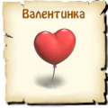

Получено: файл; исходный URL. Исходный файл без перекодирования; авторство не установлено. Страница: источник.
Валентинка
браузерная версия; платформа и дата редакции не установлены- Тип
- Постройка
- Версия и дата
- браузерная версия; платформа и дата редакции не установлены
Данные по источнику · браузерная версия; платформа не определена · дата редакции не установлена
Предварительно: Автоматическое чтение цифровых пиктограмм и их подписей; знак ? означает нераспознанное количество, подписи могут содержать ошибки источника. Требуется ручная сверка каждой стадии.. Требуется сверка.
- Исходные подписи и цифры в первой колонке
- [Валентинка] | [Доступен на 5-м уровне] | или открыть | за | 5 | [Зомбаксы] | [Стоимость постройки] | 1000 | [Опыт за каждый этап строительства] | 10 | 50 | 80 | 120 | 150 | 180 | 250 | 300 | 350 | 420 | 600 | [Суммарный опыт] | 2510 | СТРОИТЬ БОЛЬШЕ | НЕЛЬЗЯ
- Стадии по пиктограммам
- Стадия 1: 3 × Любовь + 10 × Урожай клевера + 10 × Урожай мака Стадия 2: 7 × Любовь + 30 × Урожай мака + 20 × Урожай гипносолнухов Стадия 3: 15 × Любовь + 50 × Урожай гипносолнухов + 20 × Красная краска Стадия 4: 30 × Любовь + 50 × Красная краска + 50 × Гипномак Стадия 5: 50 × Любовь + 100 × Гипномак + 5 × Урожай волчьей ягоды Стадия 6: 10 × Любовь + 10 × Урожай волчьей ягоды + 20 × Урожай лилий Стадия 7: 99 × Любовь + 40 × Урожай лилий + 30 × Урожай алых роз Стадия 8: 120 × Любовь + 100 × Урожай алых роз + 50 × Урожай кактусов Стадия 9: 180 × Любовь + 100 × Урожай кактусов + 100 × Урожай мухоморов Стадия 10: 250 × Любовь + 10 × Железное сердце + 10 × Черное сердце
Данные по источнику · Мой Мир (Mail.ru), историческая таблица · дата редакции таблицы не установлена
Предварительно: Текст таблицы Мой Мир. Некоторые обозначения валют и уровней на странице являются изображениями и могут быть потеряны при извлечении. Источники не обязательно независимы.. Требуется сверка.
- Название и данные первой колонки
- Валентинка 1000 5 ур. или 5
- Опыт, стадии, производство и модернизация
- Опыт: 2510 = 10+50+80+120+150+180+250+300+350+420+600 Стадии строительства: 3 Любовь + 10 Клевер + 10 Мак 7 Любовь + 30 Мак + 20 Гипносолнухи 15 Любовь + 50 Гипносолнухи + 20 Красная краска 30 Любовь + 50 Красная краска + 50 Гипномак 50 Любовь + 100 Гипномак + 5 Волчья ягода 10 Любовь + 10 Волчья ягода + 20 Лилии 99 Любовь + 40 Лилии + 30 Алые розы 120 Любовь + 100 Алые розы + 50 Кактусы 180 Любовь + 100 Кактусы + 100 Мухоморы 250 Любовь + 10 Железное сердце + 10 Чёрное сердце Создает: 10 Любовь = 1 Вода + 5 Железное сердце 5 Любовь = 1 Вода + 5 Чёрное сердце 15 Любовь = 1 Огонь + 5 Синее сердце
Данные по источнику · браузерная версия; платформа не установлена · дата редакции списка не установлена
Предварительно: Прочитан список. Имена файлов пиктограмм приводятся как есть: они не гарантируют идентификацию материала. Alt-атрибуты источника содержат ошибки. Отдельная статья и дата не проверены.. Требуется сверка.
- Сведения из списка, включая имена файлов пиктограмм
- [рисунок: valentinka.png] Валентинка пока недоступна для строительства :'( Доступна на: 5 уровне Стоимость: 1000 монет Даёт опыта: 2510 (10+50+80+120+150+180+250+300+350+420+600) Стадии строительства: 1. 3 любовь + 10 клевер + 10 мак 2. 7 любовь + 30 мак + 20 гипносолнухи 3. 15 любовь + 50 гипносолнухи + 20 красная краска 4. 30 любовь + 50 красная краска + 5. 50 любовь + 100 гипномак + 5 волчья ягода 6. 10 любовь + 10 волчья ягода + 20 лилии 7. 99 любовь + 40 лилии + 30 алые розы 8. 120 любовь + 100 алые розы + 50 кактусы 9. 180 любовь + 100 кактусы + 100 мухоморы 10. 250 любовь + 10 железное сердце + 10 чёрное сердце Производит: 1. 1 вода + 5 железное сердце = 10 любовь 2. 1 вода + 5 чёрное сердце = 5 любовь 3. 1 огонь + 5 синее сердце = 15 любовь


Данные по источнику · историческая браузерная игра, площадка не указана · 05.05.2012 — дата публикации; дата редакции неизвестна
Предварительно: Сопоставлено по единственному точному названию; различные версии или одноимённые объекты могут различаться. Названия файлов и alt пиктограмм сохранены как подписи, не заменяют проверенную расшифровку; изображения и цены требуют ручной сверки. Независимость от zombi-ferma.ru и других сайтов не установлена.. Требуется сверка.
- Текст и пиктограммы источника
- [изображение: m_heart.png] Валентинка пока недоступна для строительства :'( Доступна на: 5 уровне Стоимость: 1000 монет Даёт опыта: 2510 (10+50+80+120+150+180+250+300+350+420+600) Стадии строительства: 1. 3 любовь + 10 клевер + 10 мак 2. 7 любовь + 30 мак + 20 гипносолнухи 3. 15 любовь + 50 гипносолнухи + 20 красная краска 4. 30 любовь + 50 красная краска + 5. 50 любовь + 100 гипномак + 5 волчья ягода 6. 10 любовь + 10 волчья ягода + 20 лилии 7. 99 любовь + 40 лилии + 30 алые розы 8. 120 любовь + 100 алые розы + 50 кактусы 9. 180 любовь + 100 кактусы + 100 мухоморы 10. 250 любовь + 10 железное сердце + 10 чёрное сердце Производит: 1. 1 вода + 5 железное сердце = 10 любовь 2. 1 вода + 5 чёрное сердце = 5 любовь 3. 1 огонь + 5 синее сердце = 15 любовь
Связанные сущности
нет проверенных связей — требуется сверка.